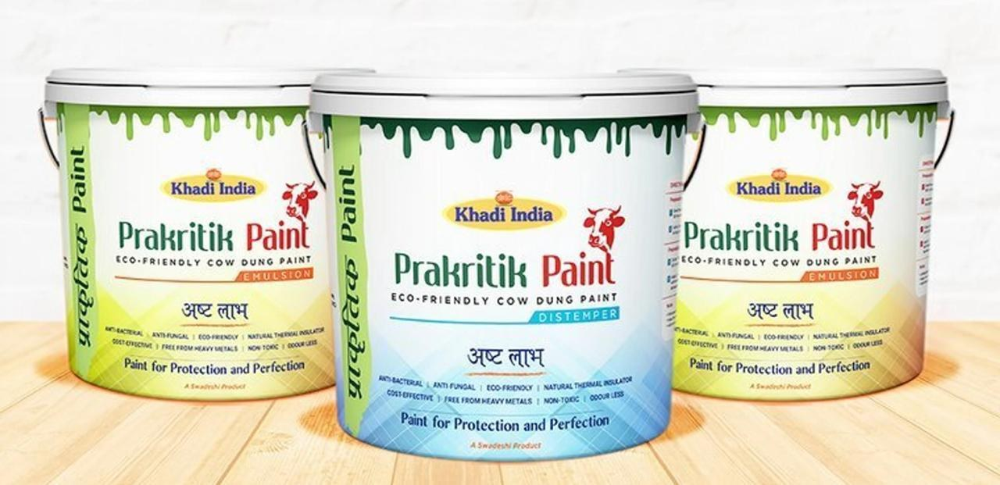
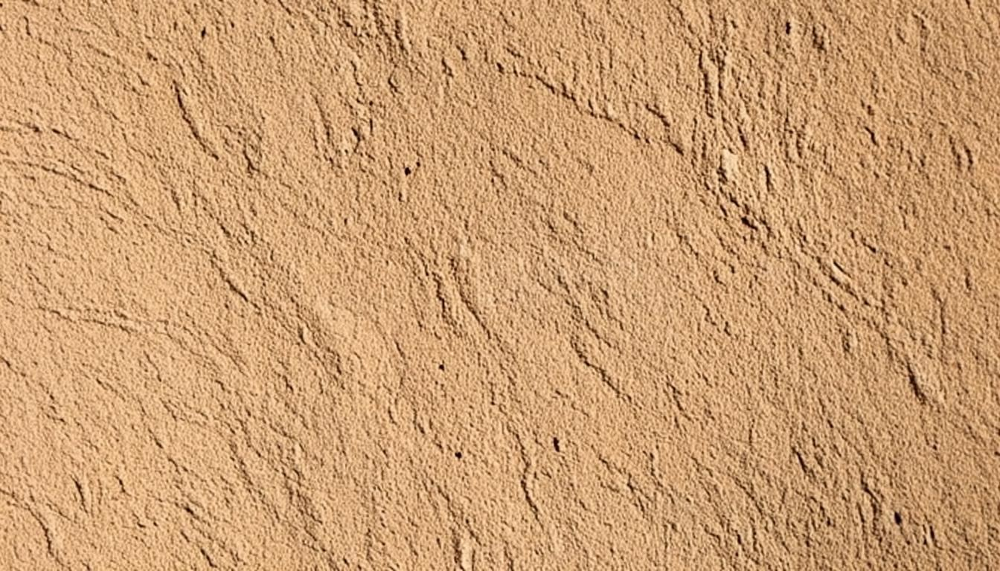
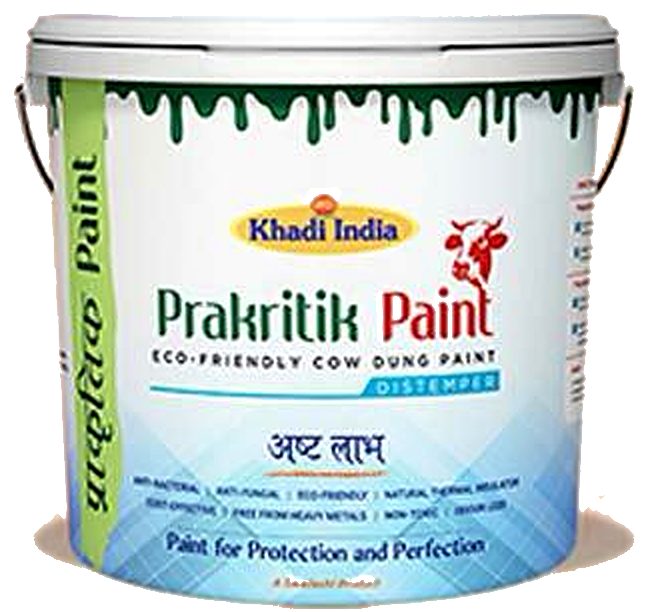
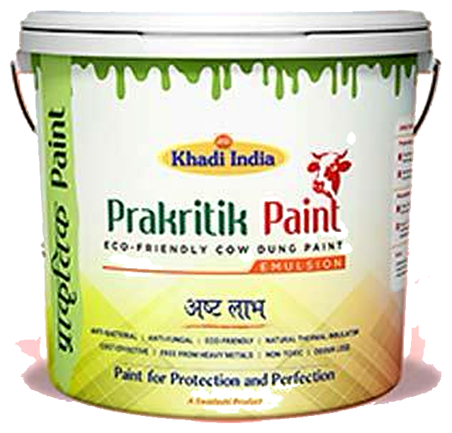
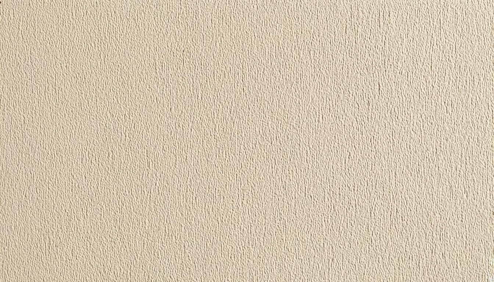
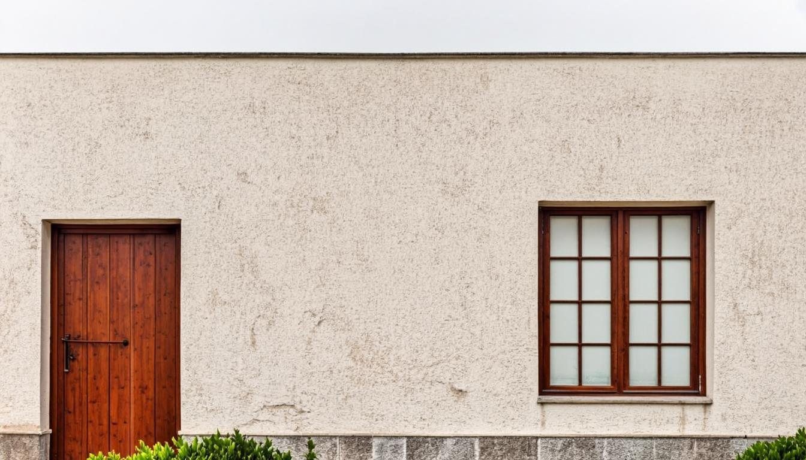

01
Natural material
Cow dung is the material inspiration.
Cow dung-based Prakritik Paint in Distemper and Emulsion formats for interior and exterior walls.

Traditional Indian homes have long used cow-dung-based coatings on walls and floors. Prakritik Paint brings that material idea into contemporary Distemper and Emulsion formats.
Both formats are listed for interior and exterior use.


Eco-Friendly Cow Dung Paint. A paint listed for interior and exterior walls. Supplied in 1, 5, 10 & 20 kg packs.

Eco-Friendly Cow Dung Paint. A paint listed for interior and exterior walls. Supplied in 1, 4, 10 & 20 litre packs.
The raw material, the paint made from it, and the finished surface — three steps, one material idea.
Cow dung is the material inspiration.
Available as Distemper and Emulsion.

Both are listed for interior and exterior use.
Eight benefits listed in the supplied Prakritik Paint material.
Benefits listed in the Prakritik Paint material.
Tap a swatch to preview the colour on the wall — only the wall plane changes; the door, window and surroundings stay as they are. These are editorial design moods — not currently available product shades.

Gaurikrit Bio Products (OPC) Private Limited — Good for Nature. Good for Life.
Explore Prakritik Paint for your space.
Discuss product and project requirements.
Talk to Gaurikrit about institutional or sustainability-led projects.
Explore collaboration around cow-dung-based bio-products.